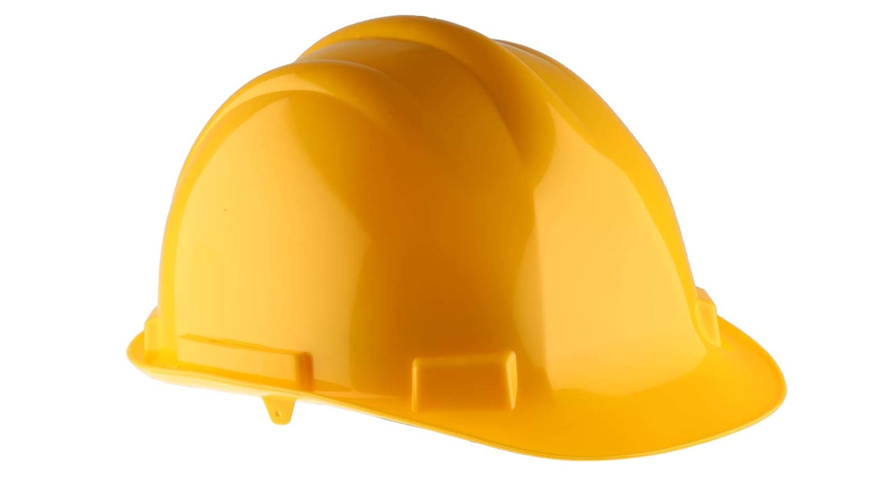

Fablab Safety
What i have learnt studying for the Fablab safety quiz is be aware of my surroundings and to abide by the rules. Certain machines that require training or assistance must be dealt with extra caution.
The following guidelines should be followed for student attire
a shirt with a collar and full-length trousers.
b. Avoid wearing loose-sleeved clothing and jewelry.
c. Do not clean your clothing with compressed air.
d. All shoes must be covered - NO open-toed shoes.
e. Long haired students must tie up their hair to avoid being entangled in rotating machinery. The use of Personal Protective Equipment(PPE) required in some laboratories and workshops to safeguard against workplace and machine hazards would include safety goggles, safety glasses, masks, gloves, ear plugs, and earmuffs.